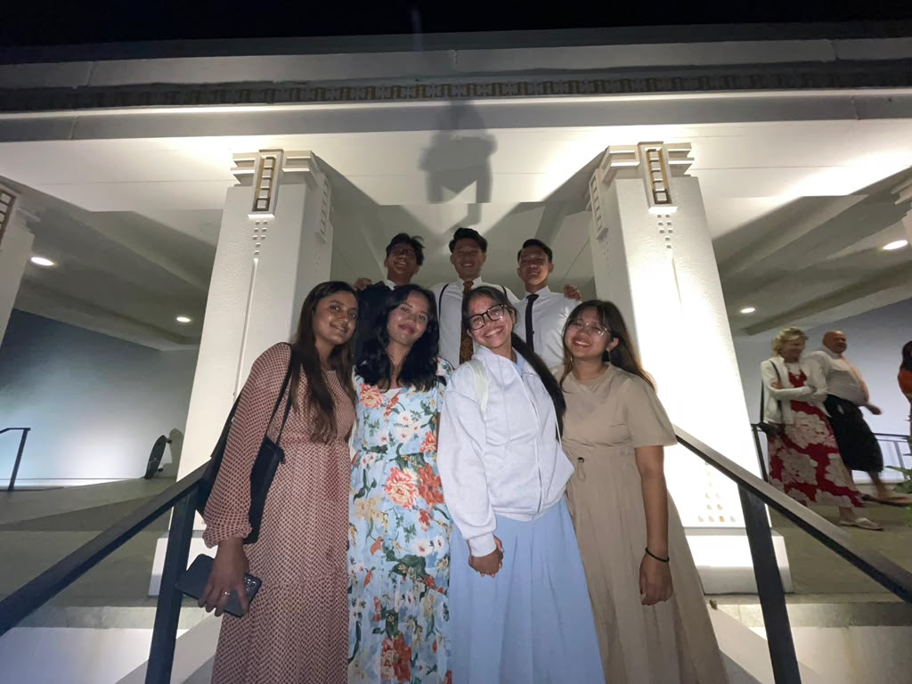

In 2011, I was baptized at my ward with my dad, and it became one of the most meaningful moments of my life. I felt happy and grateful that I could experience such a special day with him. My baptism helped strengthen my faith in Heavenly Father and Jesus Christ and reminded me of my desire to follow Their teachings. It is a memory that I will always treasure.
.
Back in 2019, I went to my first FSY in Indonesia. It was also the first FSY in Indonesia, where two stakes and one district came together, including a branch from East Timor. I was really happy and excited to meet many youth from different places and make new friends.
FSY was a really fun and special experience for me. We had classes, activities, games, and dances, and we also learned more about the gospel. I learned a lot and made many good memories with my friends. It was one of the experiences that I will always remember.
My mission life started in December 2022 and ended in April 2024. I had the opportunity to serve in my own country, Indonesia. My mission was a little challenging because Indonesia is a Muslim-majority country and has many different cultures and traditions. I learned how to respect other people’s beliefs while sharing my own faith. Even though it was not always easy, my mission helped me grow, become stronger, and trust Heavenly Father more.
My favorite song from my mission is "grateful" by DIXIE. This song reminds me to be grateful even on the hard times.
4.Visiting Temples

Back in 2022, when I was at the MTC in Manila, I had the opportunity to visit the Manila Philippines Temple. It was a special experience for me, especially as I was preparing to serve my mission. Then in 2025, I went to the Thailand Temple for a return missionary conference. It was nice to be with other returned missionaries and visit the temple together.
In April 2025, I also had the chance to visit the Laie Hawaii Temple with my friends. It was a really beautiful and peaceful experience, and I was happy that I could share that moment with them. Visiting these different temples gave me special memories that I will always remember.